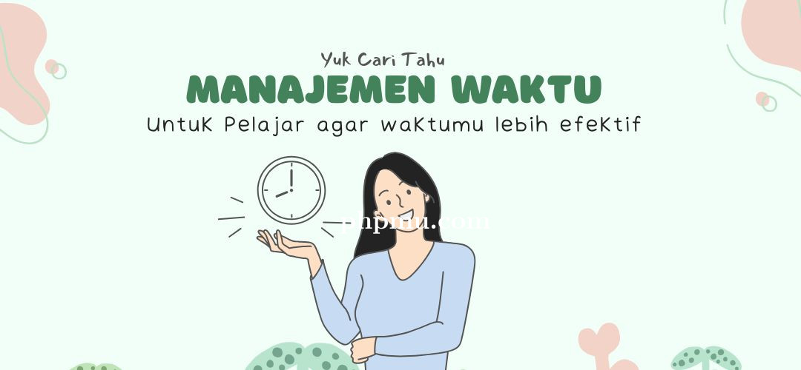

manajemen waktu dalam belajar

proses belajar
Belajar adalah perjalanan yang penuh tantangan dan kesempatan. Sebagai mahasiswa,
saya telah mengalami berbagai rintangan dalam memahami materi, mengelola waktu, dan tetap termotivasi.
Namun, saya juga menemukan bahwa setiap tantangan membawa pelajaran berharga yang membantu saya tumbuh.
Tantangan dalam Proses Belajar
Salah satu tantangan terbesar yang saya hadapi adalah mengelola waktu antara tugas kuliah, belajar mandiri,
dan kehidupan pribadi. Terkadang, saya merasa kewalahan dengan deadline yang berdekatan. Namun, dengan
menerapkan manajemen waktu yang lebih baik dan membagi tugas ke dalam bagian yang lebih kecil, saya mulai
merasa lebih terorganisir.Selain itu, memahami konsep-konsep kompleks dalam bidang Sistem Informasi juga
menjadi tantangan tersendiri. Saya sering kali harus mencari sumber tambahan, seperti video pembelajaran
atau forum diskusi, untuk mendapatkan pemahaman yang lebih baik.
Motivasi dan Refleksi
Salah satu hal yang membantu saya tetap termotivasi adalah mengingat tujuan saya dalam belajar. Saya
percaya bahwa setiap usaha yang saya lakukan saat ini akan membawa manfaat di masa depan. Seperti yang
dikatakan oleh Nelson Mandela:
"Education is the most powerful weapon which you can use to change the world."
Pendidikan adalah
senjata paling ampuh yang dapat Anda gunakan untuk mengubah dunia
Selain itu, Albert Einstein juga pernah berkata:
"Intellectual growth should commence at birth and cease only at death."
Kutipan ini mengingatkan saya bahwa ilmu yang saya peroleh bukan hanya untuk diri sendiri,
tetapi juga bisa memberikan dampak positif bagi orang lain.
Tips untuk Menikmati Proses Belajar
1. Temukan Gaya Belajar yang Sesuai,Setiap orang memiliki cara belajar yang berbeda, seperti
membaca, mendengar, atau praktik langsung.
2. Jangan Takut Bertanya,Diskusi dengan teman atau
dosen bisa membantu memahami materi lebih baik.
3. Kelola Waktu dengan Baik,Gunakan teknik
seperti Pomodoro atau to-do list untuk menjaga fokus.
4. Rayakan Kemajuan Kecil,Setiap pencapaian,
sekecil apa pun, patut diapresiasi.
Kesimpulan
Belajar bukan hanya tentang menghafal teori, tetapi juga tentang bagaimana kita menghadapi tantangan
dan menemukan solusi. Dengan tetap termotivasi dan mencari cara yang efektif untuk belajar, kita
dapat menikmati perjalanan ini dan mencapai tujuan yang lebih besar.
Referensi
manajemen waktu manajemen-waktu-bagi-pelajar-kunci-sukses-dalam-belajar
Halaman Utama |
Pengalaman Kuliah